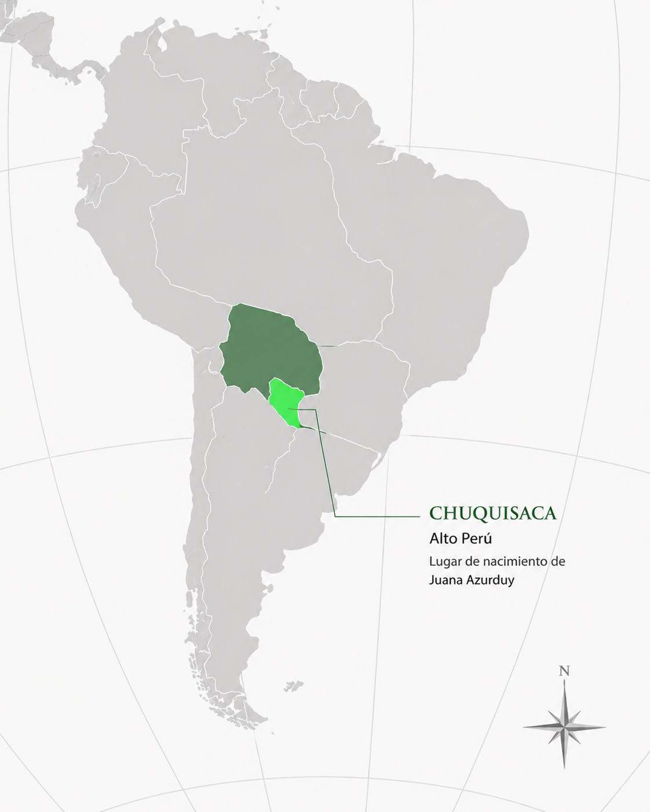

Juana Azurduy
Chuquisaca, 12 de julio de 1780 – Sucre, 25 de mayo de 1862
Una de las principales combatientes de las guerras de independencia en el Alto Perú, reconocida por Manuel Belgrano por su valentía en el campo de batalla.
← Volver a Heroínas
Presentación
Juana Azurduy nació en Chuquisaca, en el Alto Perú —actual Bolivia—, en 1780. Actuó principalmente en ese territorio y en el norte de las Provincias Unidas, una región estratégica para la defensa del proceso revolucionario rioplatense. Junto a su esposo, Manuel Ascencio Padilla, organizó y lideró tropas patriotas que combatieron directamente contra los ejércitos realistas. Es una figura fundamental de la independencia sudamericana porque demostró, con su liderazgo militar, que las mujeres podían ejercer funciones de mando y combate, y porque su lucha contribuyó de manera directa a sostener el proceso independentista en una de sus fronteras más disputadas.

Logros destacados
Lideró tropas patriotas
Organizó y comandó fuerzas irregulares en el Alto Perú junto a su esposo, Manuel Ascencio Padilla.
La espada de Belgrano
Manuel Belgrano reconoció su valentía entregándole su propia espada.
Teniente coronela
Fue distinguida con ese grado militar en reconocimiento a su liderazgo y su lucha sostenida.
Símbolo de resistencia
Se convirtió en símbolo del coraje de mujeres, pueblos indígenas y sectores populares.
Su aporte a la independencia argentina y sudamericana
Las luchas independentistas de América del Sur estuvieron conectadas entre sí. Aunque algunas de estas mujeres no actuaron directamente en el actual territorio argentino, sus acciones contribuyeron a debilitar el dominio español y a fortalecer la emancipación del continente. De esta manera, también favorecieron, directa o indirectamente, la consolidación de la independencia argentina.
Aporte directo- Combatió en el Alto Perú, una región estratégica para la defensa del norte de las Provincias Unidas.
- Colaboró con Manuel Belgrano y Martín Miguel de Güemes.
- Sus tropas ayudaron a frenar avances realistas.
- Su actuación contribuyó de manera directa a sostener el proceso independentista rioplatense.
- Participó en una lucha regional donde las fronteras actuales todavía no estaban definidas.
Ideas
Los principios que guiaron su lucha:
- Defendió la independencia frente al dominio español.
- Creía en la participación de los pueblos indígenas y mestizos en la construcción de una sociedad libre.
- Demostró que las mujeres podían ejercer funciones militares y de liderazgo.
Acciones
Lo que hizo, concretamente, en el terreno militar:
- Organizó fuerzas patriotas junto con su esposo, Manuel Ascencio Padilla.
- Participó directamente en combates contra los ejércitos realistas.
- Lideró grupos de soldados y comunidades locales.
- Colaboró con las fuerzas de Martín Miguel de Güemes.
- Fue reconocida por Manuel Belgrano por su valentía.
Legado
Cómo es recordada y por qué continúa siendo una figura fundamental:
- Es una de las máximas heroínas de la independencia sudamericana.
- Se convirtió en símbolo de coraje, liderazgo y resistencia.
- Su figura permite reconocer la participación de mujeres, indígenas y sectores populares en las guerras de independencia.
Línea de tiempo de Juana Azurduy
-
1780
Nacimiento. Nace en Chuquisaca, Alto Perú.
-
1810-1816
Guerras de independencia. Organiza y lidera tropas patriotas en el Alto Perú junto a su esposo, Manuel Ascencio Padilla.
-
1816
Continúa la lucha. Sigue al frente de la resistencia tras la muerte de su esposo en combate.
-
1816-1818
Reconocimiento de Belgrano. Combate junto a las fuerzas de Manuel Belgrano, quien le entrega su espada en homenaje a su valentía.
-
1825
Teniente coronela. Es distinguida con ese grado militar.
-
1862
Muerte. Fallece en Sucre, sin el reconocimiento pleno que recibiría décadas después.
Manuel Belgrano le entregó su espada como reconocimiento por su valentía.